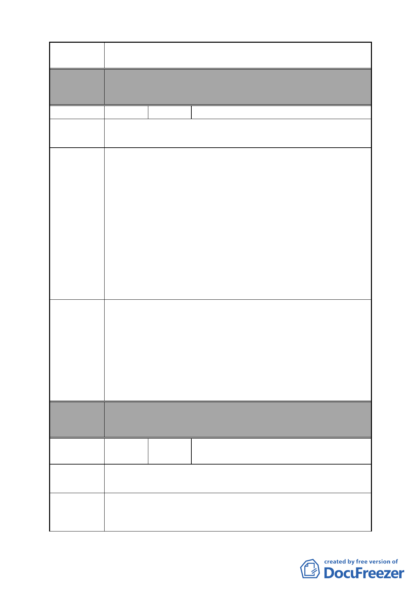

案名
變更臺北市南港區鐵路地下化沿線土地主要計畫案
地重劃範圍）
編號
陳情地點
陳情理由
建議辦法
委員會
決議
48 陳情人 陳周瑛子
南港區玉成段段二小段 87、119、120-1 等三筆地號土地，門
牌為昆陽街 70 號。
原使用分區為策略型工業區，容積 300%；
變更後為住商混合區(編號 B)，市地重劃完成後方可開發建
築，惟變更後建蔽率、容積率及住宅商業使用細目及樓層限
制均尚未定案。
按平均地權條例第 60 條規定，市地重劃後折價抵付共同負擔
之公共設施用地土地，其合計面積以不超過各該重劃區總面
積 45％為限。亦即地主可分配取回原土地 55％面積。
待重劃完成後開發建築，雖土地現值增加，惟經民核算其建
築後價值似無較重劃前申請建築高。如此將失去重劃開發意
義。
為促進地區盡速開發，增加土地利用價值，建議考慮放寬容
積及土地使用管制。
1.容積獎勵：建議在不增加重劃後公共設施負擔情形下，增加
容積獎勵，例如：基地申請建築時留設帶狀式開放空間供公
眾使用給予適度獎勵容積及鼓勵地主盡速開發建築給予開
發時程上容積獎勵等等。
2.土地使用管制：住商混合區土地使用管制除 1、2 層以下指
定商業使用外，其餘樓層不予特別限制（可共住宅使用）。
如此更能減少辦理重劃時民眾異議。以祈盡速完成土地重劃
後開發建築，促進地方繁榮並增進市容觀瞻。
本案除文字誤繕應再作修正外，其餘依市府本次會議所送修
正計畫書內容通過。
編號
陳情地點
陳情理由
49
陳情人
環華世貿新銳公寓大廈管理委員會（附
37 人連署）
土地標示:南港區玉成段二小段 88 地號。
門牌號:南港區昆陽街 60 巷 6 號，6-1 號，8 號及 8-1 號。
本〈環華世貿新銳〉大樓面臨南港區昆陽街 60 巷，為本區塊
唯一之 8 層大樓〈地下一層，地上八層〉。
此次都市計畫變更案本大樓列為市地重劃計畫範圍，因本大
- 51 -